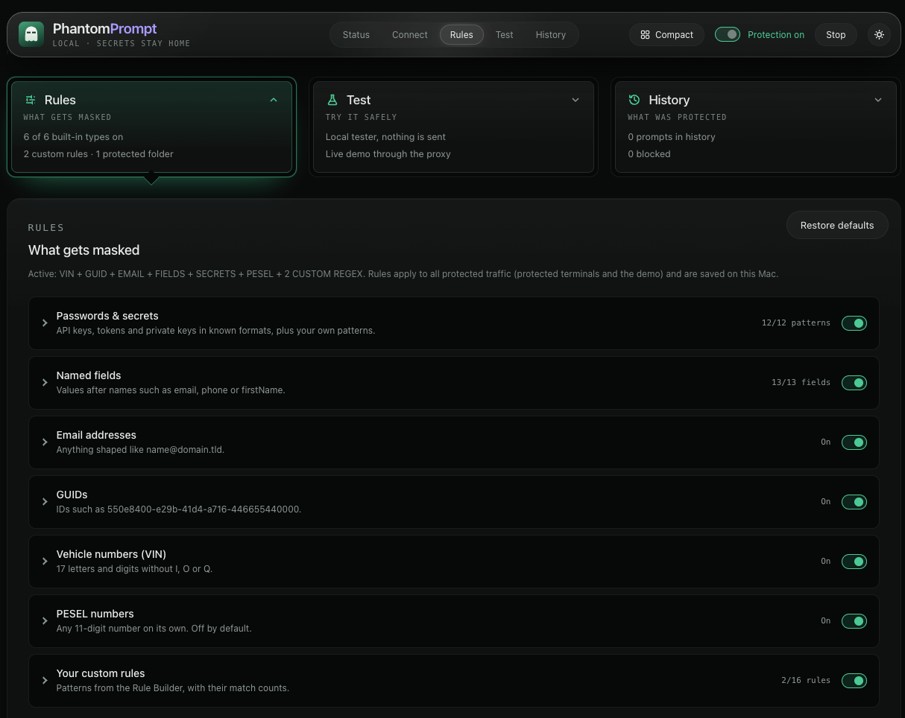
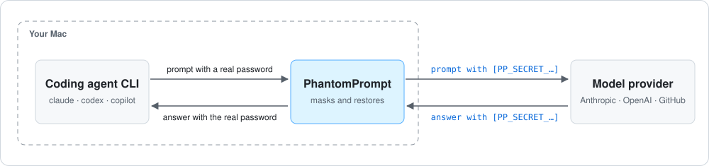
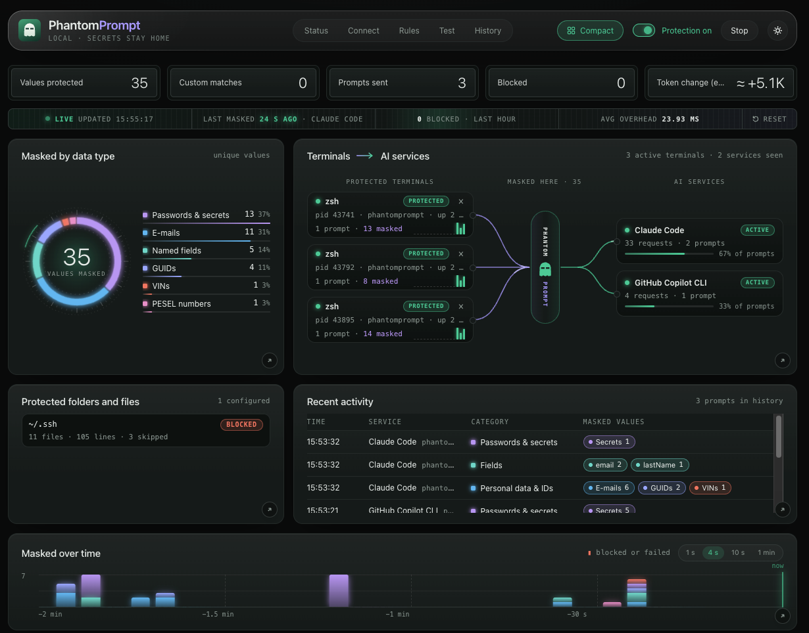

What it does
PhantomPrompt replaces sensitive values (VINs, e-mail addresses, GUIDs, labelled fields, secrets, your own patterns) with placeholders before AI coding agents send them to a model, and puts the real values back into the answer.
It runs on your Mac and masks values before they leave it. The token map lives in memory only and is never written to disk.
What gets masked
Passwords and API keys in known formats, values after names such as email or firstName, e-mail addresses, GUIDs, vehicle numbers (VIN), PESEL numbers and your own patterns. Turn each type on or off in the panel.

Protect your own data
Built-in rules cover the common formats. For everything specific to your project, add your own in the panel.
Your field names
Mask the value after any name
Add a name and every value after it is masked in JSON and text, in any letter case. Up to 64 of your own fields.
"customerId": "84721" → tokenRule Builder
Mask any word or format
Type an example and mask exactly that text, or anything with the same layout. Or write your own regular expression. Up to 16 rules.
PROJECT.ORION abc-x7k2-91Protected folders and files
Protect a whole folder
Pick a folder or file. Its lines are recognised however the AI gets them: a file read, command output or pasted text. Only fingerprints are kept in memory, and the files are checked again every minute.
Masked
Each line becomes a token and comes back in the answer, so the AI can still work with the file.
Blocked
The coding tool is told not to read the folder where it supports that. If content still reaches the AI, it is removed before it leaves your Mac.
Who it's for
Developers who let an AI coding agent work in the terminal, where it reads more than you see.
Large codebases
The agent opens files on its own: configs, fixtures, SQL dumps, .env files. Nobody checks each file before it goes into the prompt.
Logs and data nobody has checked
Application logs, stack traces, kubectl logs or API responses often carry e-mails, VINs, tokens or customer IDs.
Pasted output
A quick copy from a terminal or a ticket can hold a password you did not notice.
How it works

A protected terminal sends the agent's traffic to PhantomPrompt. Before a prompt leaves your Mac, PhantomPrompt replaces every sensitive value with a placeholder and remembers the pair in memory. When the answer comes back, it puts the real values back in place.

Privacy & security
Stays on your Mac
The real values and the token map that links them to placeholders. The map lives in memory only and is never written to disk.
Leaves your Mac
Only the masked prompt, sent to the AI service your agent already uses. PhantomPrompt has no server of its own and listens on loopback only.
Saved on disk
Your masking rules and a daily app log without prompt text or values; the newest 7 logs are kept. Only your user account can read them.
Agent telemetry switched off
In a protected terminal, Claude Code telemetry and error reports and Codex CLI analytics are turned off for that session, because they would bypass masking. Your agent's own settings files are not changed.
Masking is heuristic: a safety net, not a guarantee. Names or addresses in free prose are not detected, and processes running as your user can read the app's memory. See the threat model.
Supported agents
| Agent | Route |
|---|---|
| Claude Code | Local gateway (ANTHROPIC_BASE_URL points at it), with its own token map per terminal. |
| Codex CLI | Local gateway for the built-in ChatGPT and OpenAI providers. A custom model provider runs behind the HTTPS proxy. |
| GitHub Copilot CLI | HTTPS proxy that inspects the Copilot API. |
Get started in 4 steps
-
1
Install
Download the app and drag PhantomPrompt to Applications.
-
2
Allow it once
macOS blocks apps that Apple has not checked yet. Allow PhantomPrompt with one command in Terminal:
xattr -dr com.apple.quarantine /Applications/PhantomPrompt.appWhat does it do?
PhantomPrompt is not notarized by Apple yet. This command removes the "downloaded from the internet" mark from this one app, so macOS lets it start.
-
3
Add the
phantomcommandPaste this into Terminal, then open a new terminal window.
echo 'alias phantom=/Applications/PhantomPrompt.app/Contents/MacOS/phantomprompt' >> ~/.zshrc -
4
Start your agent with
phantomphantom claude phantom codex phantom copilotOr type
phantomalone to open a protected shell and start any of them inside it.
Every release is built from the public repository by GitHub Actions. Full instructions are in the README.
FAQ
Does PhantomPrompt send my data anywhere?
No. It has no server of its own and listens on loopback only. Your prompts go, masked, to the AI service your agent already uses, and other traffic from a protected terminal passes through unchanged.
Do I have to start my agent with phantom?
Yes. Only tools started in a protected shell (phantom) or with phantom <command> are protected.
Does it protect chats in the browser?
No. PhantomPrompt protects the supported agents in a protected terminal.
Which systems does it run on?
macOS. On Linux the engine and CLI compile, but there is no app and no support.